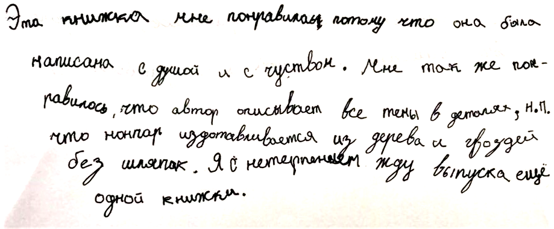
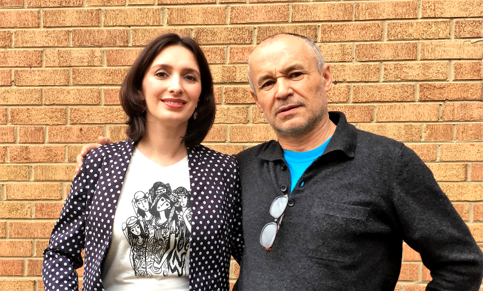
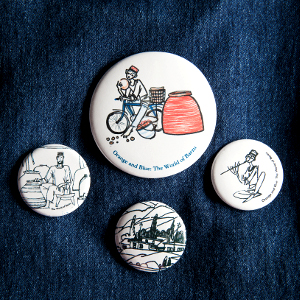
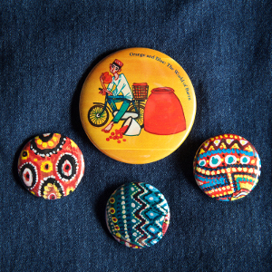

Information in English and the main crowdfunding KICKSTARTER page is HERE
Главная страница проекта на английском языке находится ЗДЕСЬ
При выборе плана не переживайте по поводу языковой версии книги. По окончании кампании по сбору средств я свяжусь с Вами по электронной почте и уточню, на каком языке Вы хотите получить книгу(и) – на русском или на английском.
Описание книги:
- Твердый переплет, плотная бумага
- Размер книги: 310х280мм (дети обожают огромные книги!)
- Текст крупным шрифтом
- 35 красочных иллюстраций на полный разворот от Фарруха Негматзаде
- примерно 80-88 страниц (точное количество страниц мы будем знать после компьютерной верстки для печати)
Эту уникальную книгу можно использовать:
- Для развития русского и английского языков в билингвальной среде.
- В качестве подарка по любому случаю: она большая, красивая, наполнена познавательной и в то же время экзотической (а для кого-то родной) информацией.
- Для чтения и обсуждения в детском саду – так можно отпраздновать день рождения Вашего ребенка!
- В качестве демонстрационного материала во время Международного Дня в школе.
- Для подготовки проекта о Центральной Азии в школе.
- Как материал для театрального представления, инсценировки в Вашем общественном клубе, центре, студии.

Давным-давно на перекрестке дорог стоял Город с Голубыми Куполами с его извилистыми улочками и причудливыми мозаиками на стенах высоких башен. Народ в том городе был разноликий, и все - купцы и ремесленники, музыканты и танцоры, богачи и бедняки - говорили на двух-трех языках, чтобы лучше понимать друг друга и жить в мире и согласии.
Город славился своими базарами – площадями, где продавали и покупали. Ох, чего только там не было! Сладкие фрукты, сочные овощи, глиняные горшки, дорогие украшения, шелковые наряды, ковры ручной работы, сапоги, редкие книги, – все, что душа пожелает!

И вот один купец, по имени Фаиз, отправился со своим караваном в далекий Индостан, край богатых махараджей, откуда он всегда привозил приправы, снадобья, жемчуга, драгоценные камни и диковинные ткани. Несколько месяцев его караван из верблюдов, верных помощников и храбрых всадников брел по пустыням и холмам. Прибыв в Город Солнца в княжестве Марвар, Фаиз сразу же отправился в крепость, что возвышалась на красной скале и где местный правитель махараджа Сардар всегда радушно принимал купцов.
Для какого возраста эта книга?
Для детей от 3 до 12 лет. Моя задача состояла в том, чтобы сделать книгу интересной и понятной не только для детей разного возраста, но и для их родителей. Таким образом, книга разделилась на несколько частей: художественную – история и сказка, рукодельно-познавательную – информация о том, как работают мастера, учебно-информационную – глава «Этнографические заметки», и вспомогательную – идеи для игр и совместных занятий детей и родителей после прочтения книги.

Слуги открыли сундук и вынули из него те самые лепешки из Города с Голубыми Куполами. Только за долгие месяцы
путешествия они стали черствыми.
Взяв их в руки, махараджа вскричал в недоумении:
- Что это?!
Что за камни ты мне привез, купец Фаиз?!
- Это лепешки из нашего города. Больше нигде в мире таких нет! – с гордостью ответил купец.
-
Ты что же, смеешься надо мной?! – сдвинув брови, спросил махараджа. – С таким хлебом я и зубы сломать
могу!
- Не сердитесь, уважаемый махараджа. Это необыкновенные лепешки.
Как и почему я написала эту книгу
Самая главная причина создания этой книги – это появление на свет моих детей. А когда у нас появляются дети, мы хотим в первую очередь поделиться с ними своим мироощущением, своими ценностями и привить любовь к тому, что любим мы. Что же люблю я? Читать и путешествовать! Узнавать о культуре других народов, об истории далеких стран, встречать новых друзей.
Моя жизнь неразрывно связана с Центральной Азией. Детство прошло в маленьком уйгурском городке на границе между Казахстаном и Китаем. Многие женщины там пекли лепешки в тандырах, вместо пластилина мы с сестренкой играли с глиной, по тротуарам гуляли ослики, а в садах созревали сладкие фрукты и ягоды. Позднее, уже после окончания института, я целый год провела в Таджикистане, и эта страна, с ее великолепной природой и добродушными людьми, навсегда осталась в моем сердце. Там у меня появилось много хороших друзей, с которыми я до сих пор общаюсь.
Я с удивлением обнаружила, что существует очень мало интересных, написанных понятным языком книг для малышей о Центральной Азии, в особенности для детей дошкольного возраста. А ведь это регион, где проживает более 100 этнических групп, где пролегал Великий Шелковый Путь, куда ступала нога Александра Македонского и где владычествовали Чингис-Хан и Темирлан. Сколько историй, сколько легенд и загадок!
Однажды мой муж привез из очередной командировки в Таджикистан две кружки с графикой нашего друга художника Фарруха Негматзаде. Изображения на кружках были настолько говорящими, что я сразу же начала воображать истории и рассказывать их своим детям. Так родилась идея создать серию увлекательных книг о таджикском мальчике Барзу, через которые юные читатели познакомятся не только с самобытной культурой таджикского народа, но и постепенно узнают много интересного о других народностях и странах Азии.
Уже более года я работаю над своей, не побоюсь этого слова, уникальной книгой. За это время я забросала друзей из Таджикистана и Узбекистана сотнями вопросов, общалась с экспертами, снова слетала в регион, посетила тандырные мастерские и обработала массу исторического и этнографического материала.

И, конечно, я считаю чудом, что, несмотря на свою занятость, уважаемый Фаррух-Ака согласился иллюстрировать книгу! Ведь именно с его графики все и началось. Кто еще смог бы так детально и красочно изобразить все прелести таджикского быта, если не человек, живущий на таджикской земле?!
Первые отзывы о книге!
Ирина из Бостона (мама Пети (6 лет) и Миши (4 года)
Моим детям очень понравилось разглядывать детали на рисунках, соотносить их с текстом и задавать вопросы. Мы все полюбили эту книгу. Мы даже нашли Таджикистан на карте мира. Детям было интересно узнать необычные слова («тандыр», «кишлак») и имена, которые они никогда не слышали прежде. С любопытством они слушали и разглядывали, как изготавливают тандыр, как пекут в нем лепешки. Но больше всего им понравилась глава «Оранжевые крыши». Они очень удивились, что люди сушат абрикосы на крышах и что фрукты превращаются в курагу, которую я всегда даю им с собой в школу. Им также понравилось, как Барзу решил для девочек проблему с бусами.
Как родитель, я ценю тот факт, что книга предоставляет множество возможностей для дальнейшего расширения кругозора после прочтения книги. Например, нахождение страны на карте, обсуждение уклада жизни в другой стране, где люди живут ближе к природе и многое делают своими руками. Это огромная разница с нашей суматошной жизнью и едой из супермаркета. Мы рассыпали курагу на столе и представляли себе оранжевые крыши в кишлаке.
Шанталь из Берлина (8 лет)
Наталья Миронова, проживает в Калифорнии
Повествование вьется, как восточный узор. Очень простой язык создает яркие запоминающиеся образы гор, голубого неба, древнего быта, старого солнечного города с крышами. Мы входим в удивительный мир смышленого таджикского мальчишки, трудолюбивого и любопытного, который путешествует на велосипеде к своей бабушке. Вместе с ним мы открываем бабушкины секреты и вечную мудрость восточного быта и фольклора. Очень добрая книжка. Как бабушка троих внуков, я рада ее появлению и, несомненно, рождению нового автора.
Создатели
Марина Эйбрамс – автор идеи и серии книг «Барзу и его мир»; руководитель проекта и основательница «Barzu World». Окончила Школу-Гимназию №134 г. Алматы в Казахстане, группа филологов (Ф-7). Затем училась в Казахском государственном университете международных отношений и мировых языков им. Абылайхана по специальности «референт-переводчик английского языка». Помимо английского я изучала китайский и испанский языки и защитила дипломную работу на тему «Особенности перевода испанской поэзии на русский и английский языки (На примере поэзии Федерико Гарсии Лорки, Пабло Неруды и Антонио Мачадо)». Степень магистра я получила в Монтерейском институте международных отношений (Monterey Institute of International Studies, California, USA) по специальности «Международные отношения».
Фаррух Негматзаде – иллюстратор книги; известный современный художник Таджикистана. Мы познакомились в 2005 году в Душанбе; будучи соседями, мы стали хорошими друзьями. У Фарруха трое детей и четверо внуков. Он окончил Московскую среднюю художественную школу (МСХШ) при Академии Художеств СССР, а затем в 1982 стал выпускником Московского государственного художественного института им. В. И. Сурикова. Его работы представлены в галереях и частных коллекциях всего мира. Некоторые из них можно увидеть здесь:
Наталья Кузьмина – корректор русской версии книги; закончила Гуманитарный факультет Новосибирского Государственного Университета по специальности «филолог, преподаватель русского языка и литературы». С 1993 по 1996 год мы вместе с Натальей учились в одной филологической группе в Гимназии №134 города Алматы в Казахстане. И вот теперь, через 20 лет, имеем счастье поработать вместе в этом проекте. Благодаря ей, все наши запятые будут на месте! Самое главное, что Наталья еще и мама трех замечательных мальчишек – Максима (9 лет), Александра (4 года) и Николаса (19 месяцев).
Джошуа Эйбрамс – переводчик английской версии книги; мой муж и самый лучший папа для моих детей. Помимо своей профессиональной деятельности в сфере гражданского общества и общественного здравоохранения, Джошуа пишет прекрасные рассказы. К тому же он свободно говорит по-русски. Русский язык он изучал в 1991 году в Санкт-Петербурге по обменной программе при тогда еще Ленинградском педагогическом институте им. Герцена. Позднее Джошуа был волонтером Корпуса Мира в Казахстане, жил и работал почти во всех странах бывшего СССР. Он закончил Бард Колледж (BARD College) и Университет штата Индиана (Indiana University). Именно благодаря его работе я и оказалась в Таджикистане!
Мои дети – Джона (5 лет) и Аннабель (2 года). Самые первые слушатели и соучастники ежедневного творческого процесса. Они с нетерпением ждут появления этой книги.
Поддержите наш проект!
МЫ ПРЕДЛАГАЕМ СЛЕДУЮЩИЕ ПЛАНЫ-ВОЗНАГРАЖДЕНИЯ:
Эксклюзивный значок
EXCLUSIVE PIN BUTTON
$5
В качестве огромного «СПАСИБО»
мы отправим Вам наш эксклюзивный значок с изображением главного
героя книги.
Черно-белые значки
BLACK AND WHITE PINS
$10
Четыре эксклюзивных черно-белых круглых значка с изображениями по мотивам книги. Эти значки очень интересно смотрятся и на пальто, и на джинсовой курточке или жакете, и на головном уборе, и на рюкзаке.
Цветные значки
MULTI-COLORED PINS
$11
Четыре эксклюзивных разноцветных круглых значка. На них изображены части иллюстраций из книги. Эти значки очень интересно смотрятся и на пальто, и на джинсовой курточке или жакете, и на головном уборе, и на рюкзаке.
Альбом-раскраска
COLORING BOOK
$12
Электронная версия альбома-раскраски «Барзу и его мир». Вы сможете распечатать ее множество раз и
в любое время. 25 уникальных иллюстраций по мотивам книги.
Красочные открытки
COLORFUL GREETING CARDS
$13
Эксклюзивный набор из 6 открыток с копиями иллюстраций из книги на внешней стороне открытки. Внутренние
страницы открытки пустые. Набор также включает конверты.
Книга ДЕТЯМ
DONATE THE BOOK
$21
Подарите книгу детям в Центре адаптации детей беженцев.
Почтовые расходы в этом случае я возьму
на себя.
КНИГА
BOOK
$25
В ваших руках первое издание книги. Твердый переплет, размер 310х280мм, примерно 80 - 88 страниц, 35 прекрасных цветных иллюстраций на полный разворот.
1 Книга ВАМ + 1 книга ДЕТЯМ
+ Альбом-раскраска
1 GET + 1 GIVE + Coloring book
$47
Давайте поможем незащищенным детям почувствовать себя долгожданными гостями в этом мире! Подарим им улыбку и возможность приобретения новых знаний. Вы получите 1 копию книги, а я отправлю еще одну копию книги и электронную версию альбома-раскраски бесплатно в Центр адаптации детей беженцев в Москве.
Книга с автографом
PERSONALIZED BOOK
$65
А хотите книгу с пожеланиями от самого автора именно для Вашего малыша или малышей? Да еще и несколько значков в придачу! Это будет очень особенный подарок! (Имена детей я уточню с Вами через электронную почту.)
Тройной пакет
TRIPLE PACK
$69
Вы получаете 3 копии книги. Ваш выбор на каком языке будет каждая книга: на английском или на русском. Дарите родственникам и друзьям, а также не забудьте о местной библиотеке!
Полный пакет
FULL PACK
$80
1 книга – Вам, 1 книга – детям в Центре адаптации детей беженцев, 1 электронная версия альбома-раскраски, набор из 6 открыток с иллюстрациями из книги , 8 эксклюзивных значков.
Восточная сказка
EASTERN TALE
$210
Получите 1 книгу, 1 электронную версию альбома-раскраски, и визит автора на детском мероприятии или на дне рождения Вашего малыша. Я приду в национальном таджикском наряде, принесу различные предметы таджикского быта для демонстрации и прочту несколько глав из книги с показом иллюстраций. Поверьте, детки будут зачарованы! Под народную музыку я также могу научить их нескольким движениям таджикского танца. На основе прочитанного можем вместе сделать поделки. Данный план (и по-русски, и по-английски) доступен с октября 2017 года и только для жителей района Washington D.C. (так называемого большого Вашингтона).
Книги в подарок для Центра адаптации детей беженцев Комитета «Гражданского содействия»
Я очень надеюсь, что, благодаря Вашему милосердию и щедрости, мы сможем подарить некоторое количество книг Центру адаптации детей беженцев в г. Москве (Россия), в котором также занимаются дети вынужденных переселенцев и рабочих мигрантов. Очень часто такие дети, уже переживающие огромный стресс из-за своего нестабильного статуса, отстают по школьной программе и не знают русского языка; им очень сложно адаптироваться на новом месте. На данный момент в Центре занимаются дети из Афганистана, стран Африки, Кыргызстана, Таджикистана, Узбекистана, Филиппин.
Книга «Голубые купола и оранжевые крыши» поможет детям учить русский и английский языки. А тем, кто приехал из Центральной Азии, будет особенно приятно поделиться через книгу и своей культурой.
Подробную информацию о деятельности Центра и Комитета можно найти здесь: http://refugee.ru/refugee-kids/ http://refugee.ru/en/children-adaptation-center/
График проекта
Июль: Обработка данных и перевод денежных средств от Kickstarter. Уточнение у взносчиков на каком языке они хотят получить книги. Отправка электронного альбома-раскраски и других вознаграждений, если они не были заказаны вместе с книгой.
Август-сентябрь: Электронная верстка книги «Голубые купола и оранжевые крыши», подготовка к печати. Книга в печати.
Октябрь: Отправка книги и вознаграждений всем нашим спонсорам, то есть ВАМ!
Октябрь: Начиная с этого месяца я смогу придти к вам в гости и рассказать «Восточную сказку».
Часто задаваемые вопросы
Мне бы хотелось , чтобы книга получилась высокого качества и отвечала прежде всего моим требованиям и моему видению конечного продукта. Большой размер, твердая обложка, плотная бумага, цветные иллюстрации на полный разворот – все эти факторы определяют высокие издательские затраты. Полная сумма проекта – $18.000 – включает также административные, почтовые и транспортные расходы, работу технического редактора, изготовление бонусов (открыток, шапок, альбома раскраски), выплату соответствующих налогов и процентов за услуги Kickstarter. Но эта сумма НЕ включает гонорары за работу автора и художника. Мы очень надеемся, что нам удастся собрать больше $18 000. В этом случае мы сможем напечатать большее количество книг и выйти на более широкую аудиторию, расширить наш проект. Чем больше книг мы напечатаем, тем ниже будет себестоимость одной книги. Некоторая сумма от дохода пойдет на издание второй книги из серии «Барзу и его мир».
Конечно! Если Вам не подходит ни один из предложенных планов, пожалуйста, напишите мне по адресу barzuworld@gmail.com , и я смогу оформить Ваш уникальный заказ!
Текст книги на 95% (каждый день я редактирую и добавляю деталей) и иллюстрации на 100% готовы. Я хорошо исследовала рынок и все стадии книгоиздания, чтобы избежать возможных рисков, как для Вас так и для меня. Я думаю, что мой график проекта реалистичен. В случае любой задержки я незамедлительно буду Вас информировать.
Не забывайте, что условия Kickstarter ВСЕ ИЛИ НИЧЕГО. То есть мы получим деньги на проект только в том случае, если соберем полную сумму 18.000 долларов США. Если мы не набираем этой суммы, то Ваши деньги возвращаются к Вам. Эти с одной стороны жесткие условия обеспечивают уверенность в том, что у нас будет нужная сумма на реализацию проекта и на выполнение всех наших обещаний.